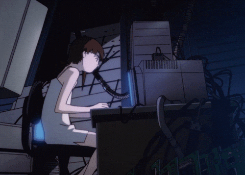
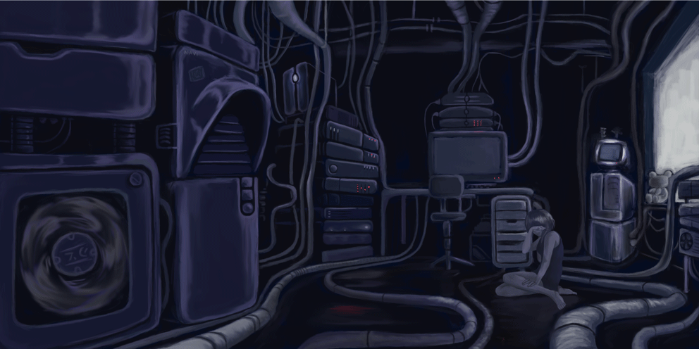

Vianca Viveros
Scrum Master
Estudiante de Ingeniería Civil Informática.

Intereses:
- Gestión de proyectos ágiles
- Desarrollo Frontend
- Diseño UX/UI
Lenguajes:
- HTML5 & CSS3
- JavaScript
- Python básico
Bases de Datos:
- MySQL
- PostgreSQL
Herramientas:
- Bootstrap
- Docker & Nginx
- Git & GitHub

_
□
X
Portafolio de Proyectos
Sitio Web Informativo XP
Presentar al equipo de trabajo de manera creativa y documentar el uso de Docker y Nginx.
Tecnologías: HTML, CSS, Bootstrap, Docker, Nginx.
Características: Diseño responsivo retro, navegación mediante pestañas, despliegue en contenedor.
FinalizadoSistema de Inventario Básico
Controlar el stock de productos.
Tecnologías: MySQL.
Características: Registro de productos, actualización de cantidades y alertas de stock bajo.
En desarrollo